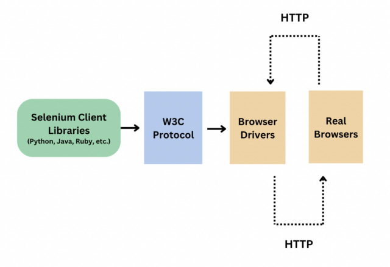

Browser item
Foundational Concepts and Synthetic Monitoring Architecture
The introduction of the Browser Item in Zabbix 7.0 marked a significant expansion of monitoring capabilities, allowing Zabbix to serve not only as a traditional IT infrastructure monitoring tool but also as a powerful resource for monitoring strategic web-based information. This item type enables synthetic monitoring, a method that simulates the behavior of a real user, including multi-step journeys (user journeys) such as logging in, navigating through menus, or completing a checkout process.
What is the Zabbix Browser Item?
In essence, the Browser Item collects data by executing user-defined JavaScript code in an automated browser environment via HTTP/HTTPS. Unlike simple HTTP requests, this item simulates complex actions like clicks, text input, and dynamic navigation within web applications. The ability to simulate the website in this manner, including capturing screenshots and measuring performance, enables organizations to ensure the availability and integrity of both internal websites and external strategic information sources (such as government portals for tenders).
The Technological Foundation: WebDriver API
The functioning of the Browser Item relies on a crucial architectural dependency: the WebDriver API (based on the W3C WebDriver standard). This is an established framework, often implemented by solutions such as Selenium Server or a headless WebDriver (e.g., ChromeDriver), which acts as the web testing endpoint. The Zabbix Server or Proxy functions as the client; it sends the defined JavaScript commands to this external endpoint, where the actual browser (usually Chrome in a standalone container) is controlled. The results of the simulated session, including metrics and error information, are then returned to Zabbix as a structured JSON object.
 CH03.xx Architecture Overview
Browser Item vs. Classic Web Scenarios: The Strategic Choice
Before implementing the Browser Item, it is crucial to understand the difference between it and the older, classic Web Scenarios. Classic web scenarios are based on the HTTP Agent and execute steps sequentially, collecting only protocol-level metrics such as download speed, response time, and the HTTP response code. They check whether a predefined string is present in the HTML response and can perform a simulated login, but they do not render the full Document Object Model (DOM) of the page.
The Browser Item, conversely, simulates the entire browser stack. This is indispensable for monitoring modern, complex JavaScript-based Single Page Applications (SPAs) or other web pages where content is loaded asynchronously. Where classic scenarios fail due to the lack of JavaScript execution, the Browser Item ensures the reliability of synthetic checks by using a real browser engine. Furthermore, the Browser Item is the only method within Zabbix that can capture visual snapshots (screenshots), which is invaluable for troubleshooting. The implication of this superior functionality is that Browser Items require significantly more CPU and memory on the WebDriver host and on the Zabbix processes performing the polling.
Architectural Requirements: Setting up the WebDriver Endpoint
A successful implementation of the Browser Item requires careful configuration of the external web testing endpoint. The recommended and most robust method is to use Docker containers to create an isolated, scalable Selenium Server environment.
Implementing Selenium Standalone Chrome via Docker
The Zabbix system is designed to communicate robustly with a Selenium Standalone Server using a Chrome browser engine. It is essential to launch the container with the correct flags to enable stability and debugging.
The following docker run command is used to start the Selenium Server with Chrome in detached mode (-d), allocating the necessary ports and memory :
docker run --name browser \
-p 4444:4444 \
-p 7900:7900 \
--shm-size="2g" \
-d selenium/standalone-chrome:latest
The parameters in this command serve specific, critical purposes :
docker run --name browser: This initiates a new Docker container named "browser"-p 4444:4444: This is the primary communication port. It maps port 4444 on the host machine to the container port. This is the port the Selenium Server uses to accept WebDriver commands from the Zabbix Browser Pollers.-p 7900:7900: This port is optional but highly recommended for diagnostics. It maps the Virtual Network Computing (VNC) server port of the container, allowing an administrator to visually observe the automated browser in real time remotely (via a VNC client). This is crucial for debugging complex JavaScript scripts and unexpected web interactions.--shm-size="2g": This is a critical stability parameter. It allocates 2GB of shared memory to the container. Chrome requires a significant amount of shared memory (/dev/shm) to function correctly and stably under automation. Failing to set this can lead to unpredictable browser crashes or slow execution times that are difficult to diagnose from Zabbix.-d: Runs the container in detached mode, meaning it will run in the background.selenium/standalone-chrome:latest: Specifies the Docker image to use.
Validation of the Connectivity
Before configuring the Zabbix Server, the accessibility and functionality of the WebDriver Endpoint must be validated. This eliminates network or container issues as potential causes of subsequent Zabbix errors.
The validation steps are as follows :
- Determine IP Address: Identify the IP address of the Docker interface (e.g., 192.0.2.1).
- Test Port Connectivity: Use nc (Ncat) to verify the connection to the WebDriver port:
curl -L 192.0.2.1:4444
# Expected output: HTML content, often starting with <!DOCTYPE html>...<title>
Selenium Grid</title>
Zabbix Server/Proxy Configuration and Scalability
Browser Items are executed by specific Zabbix processes called browser pollers. These must be correctly configured on the Zabbix Server or Proxy responsible for executing the synthetic checks.
Server Configuration Parameters (zabbix_server.conf)
Two parameters in the Zabbix server configuration file (/etc/zabbix/zabbix_server.conf or zabbix_proxy.conf) are essential: WebDriverURL and StartBrowserPollers.
WebDriverURL (Mandatory) This parameter must specify the web testing endpoint configured before (our container). This is a mandatory parameter, as the default value is empty. Without a valid URL, Zabbix cannot initialize the WebDriver sessions.
Example: WebDriverURL=http://192.0.2.1:4444
StartBrowserPollers (Scalability) This controls the number of pre-forked Zabbix processes dedicated to executing and processing Browser Item checks. The default value is 1, and the range is 0 to 1000.
Since browser automation is a CPU-intensive and time-consuming task, Browser Items are inherently high-latency items. The number of pollers set NPollers determines how many synthetic checks Zabbix can initiate concurrently. It is a common mistake to increase this number without increasing the capacity of the WebDriver Endpoint (the number of simultaneous browser sessions Selenium can handle). An imbalance here causes the Zabbix Queue Overview to grow, indicating that values are taking too long to update.10 To optimize monitoring performance, the NPollers in Zabbix must be balanced with the actual parallel execution capacity of the WebDriver host.
After modifying the configuration files, the service must be restarted:
systemctl restart zabbix-server (or zabbix-proxy).
Scalability and Isolation with Zabbix Proxies
For large-scale monitoring or monitoring remote locations, using Zabbix Proxies is highly recommended. The Browser Item functionality is available on both the Server and the Proxy, meaning the CPU-intensive rendering and script execution can be isolated to a dedicated Proxy environment.
The advantage of isolating synthetic checks on a Proxy is twofold: firstly, the load on the central Zabbix Server is reduced, and secondly, the risk is avoided that the high-resource-consuming browser automation interferes with the performance of regular, critical infrastructure checks.
The table below summarizes the essential configuration parameters.
| Parameter | Purpose | Recommended Action |
|---|---|---|
WebDriverURL |
URL/IP of the WebDriver Endpoint (e.g., Selenium Server) | Mandatory to set. Format: http:// |
StartBrowserPollers |
Number of pre-forked processes for Browser Item checks | Increase this in line with the parallel capacity of the WebDriver host. |
Host Configuration and the Master Item
The following steps describe the necessary configuration in the Zabbix Frontend to set up website monitoring.
Host and Template Configuration
Host Creation: Create a new host representing the web application to be monitored (e.g., "Production Web Portal").Template Link: Link the out-of-the-box template "Website by Browser" to this host. This template is designed for complex web applications and includes standard Master Items, Dependent Items, Triggers, and Dashboards.
Host Macro Definitions
The linked template typically uses User Macros to set dynamic parameters, keeping the template reusable. These macros must be set at the Host level (via the Macros tab -> Inherited and host macros) :
- {$WEBSITE.DOMAIN}: Define the target URL or domain name to be monitored (e.g., git.zabbix.com/projects/ZBX/repos/zabbix/browse).
- {$WEBSITE.GET.DATA.INTERVAL}: The update interval for the Master Item. Due to the high resource cost of a full browser check, a longer interval is often used (e.g., 15m).
Master Browser Item Configuration
The Browser Item itself acts as the Master Item that returns a large, structured JSON data set. Configuration at the item level is crucial for functionality :
- Type: Select Browser.
- Key: Enter a unique key (e.g., web.browser.scenario[login_check]).
- Parameters: This is a list of name/value pairs passed as variables to the JavaScript script. This is the ideal place to define non-sensitive parameters (URLs, viewport sizes) and, using User Macros, sensitive credentials (usernames, passwords).
- Script: This is the central component where the JavaScript code for browser interaction is entered.
- Timeout: Set the maximum execution time of the JavaScript (range: 1–600 seconds). Exceeding this time results in an error. Since synthetic checks are inherently time-consuming, this value should be set generously, but not excessively, to prevent long-running checks from blocking the poller queues.
Scripting Advanced Browser Interactions (JavaScript API)
The power of the Browser Item lies in the specialized JavaScript environment provided by Zabbix. The JavaScript script directs the entire browser interaction and data collection.
The Zabbix JavaScript Context and the Browser Object
The script has access to Zabbix's additions to the JavaScript language, particularly
the Browser objects. The central Browser object manages the WebDriver session;
it is initialized upon creation and terminated upon destruction. A single script
can support up to four Browser objects but they will share the same WebDriver
session internally.
The basic workflow of any script includes :
- Initialization of a
Browsersession, optionally with customchromeOptions(e.g., --headless=new for performance). - Navigation to the starting URL (
browser.navigate(url)). - Execution of the defined interactions.
- Data collection via
browser.collectPerfEntries()at crucial points. - Returning the results as a JSON string via
JSON.stringify(browser.getResult()).
Running Browsers in Headless Mode
Most Zabbix environments run on Linux servers which do not have a GUI. A typical browser expects an X11/Wayland display environment. Without one, Chrome or Firefox fails with errors such as:
- “Missing X server”
- “No DISPLAY variable set”
- “GPU process initialization failed”
The solution is Headless Mode, which allows Chrome/Firefox to run without a graphical environment.
Recommended Chrome options:
var opts = Browser.chromeOptions({
args: [
'--headless=new',
'--no-sandbox',
'--disable-gpu',
'--window-size=1920,1080'
]
});
Why these flags matter:
| Flag | Purpose |
|---|---|
--headless |
Runs Chrome without GUI. Required. |
--no-sandbox |
Needed in SELinux/sandboxed server environments. |
--disable-gpu |
Prevents GPU-related crashes in headless mode. |
--window-size |
Ensures consistent screenshots and layout. |
Essential Methods for Interaction and Timing
For executing complex interactions, the following methods of the Browser object
are crucial :
navigate(url): Navigates the browser to the specified URL.findElement(strategy, selector): Finds a single element on the page (e.g., an input field or button) using a location strategy (CSS, XPath )sendKeys(text)/click(): Methods of the returned Element object to enter text or click buttons.setElementWaitTimeout(timeout): Sets the implicit wait time (in milliseconds) the browser uses when searching for elements. This is a critical method for making scripts robust against variable web page load times.collectPerfEntries(mark): Collects performance data from the browser (based on the browser's Performance API). The optional mark parameter labels this snapshot, which is essential for measuring the duration of specific steps in a transaction (e.g., "open page" or "login").
Implementing a Multi-Step Login
A common scenario is monitoring a login procedure. A robust script for this task
must dynamically handle credentials (passed as parameters/macros) and time each
step.
The script initializes a session, navigates, uses findElement to locate the
username and password fields (often via XPath or CSS selectors), and enters the
data using sendKeys. The login button is then clicked. Using
collectPerfEntries() immediately after navigation and again after clicking the
login button makes it possible to measure the pure page load time and the total
login time separately. Finally, the script should perform a check (e.g.,
findElement for the "Sign out" link) to validate the success of the transaction.
Defensive Scripting and Error Handling
The stability of synthetic monitoring depends entirely on the quality of error handling. Zabbix's JavaScript environment allows for robust error handling with try...catch blocks.
- Error Handling and Screenshots: When detecting an error (e.g., an element not
found, a
WebdriverError), thecatchblock should capture a screenshot usingbrowser.getScreenshot(). This Base64-encoded image is added to the JSON results. This provides immediate visual context of the error, resulting in significant time savings during debugging compared to just a textual error message.
Data Processing, Preprocessing, and Visualization
The Master Browser Item produces a single, large JSON string containing all
collected data, including performance metrics, status information, and the
Base64 screenshot. To make this raw data useful for triggers, graphs, and
dashboards, Dependent Items and Preprocessing are necessary.
Extraction via Dependent Items
A Dependent Item is directly linked to its Master Item and obtains its value by processing the Master Item's value. For every desired metric from the Browser Item's JSON output, a separate Dependent Item must be created.
The configuration of a Dependent Item includes :
- Type: Select Dependent item.
- Master item: Select the previously configured Browser Item.
- Type of information: Determines the data format (e.g., Numeric Float for times, Character for error messages, Binary for screenshots).
Preprocessing: JSONPath for Metrics
Preprocessing steps are used to extract the necessary data from the JSON payload. The primary method for this is JSONPath. JSONPath allows the administrator to execute queries on the JSON structure to isolate specific values (such as the duration of the login step or an error code).
Once the value is extracted, the preprocessing pipeline must ensure that the data type matches the "Type of information" of the Dependent Item.
Capturing and Storing Screenshots
The capture and visualization of screenshots is one of the most valued features of the Browser Item.
- Extraction: Create a Dependent Item specifically for the screenshot.
- Type of Information: Set this to Binary. This data type is specifically designed to store and display large binary data, such as Base64-encoded images.
- Preprocessing: Use JSONPath to extract the Base64-encoded string produced
by
browser.getScreenshot().
It is vital to consider storage limits. The Base64-encoded image may be a maximum
of 1 MB in size. This limit can theoretically be adjusted via the ZBX_MAX_IMAGE_SIZE
constant, but it is usually more practical to reduce the browser viewport using
browser.setScreenSize(x,y) in the JavaScript script to comply with the 1MB limit,
especially for complex pages.
Visualization
The stored binary data can be visualized directly in the Zabbix Frontend. The
Item History Widget on Zabbix Dashboards is optimized to display binary data
(such as the Base64 image). When the user hovers over or clicks the "Show"
option of the binary value, a pop-up window opens with the actual captured
image. This provides an immediate, visual overview of the web application's
status at the moment of the check.
Tips, Troubleshooting and Security
Effective management of the Browser Item requires proactive monitoring and attention to performance and security.
Performance Optimization Best Practices
Synthetic monitoring is resource intensive. Balancing the Zabbix settings with the underlying WebDriver infrastructure is essential.
-
Timeout Optimization: In addition to the Zabbix Master Item Timeout parameter, script authors should actively use the internal JavaScript timeouts, such as
browser.setElementWaitTimeout(ms)andbrowser.setSessionTimeout(ms)and, when needed,browser.setScriptTimeout(ms). This ensures the script fails as quickly as possible if a step fails, releasing the costly Browser Poller sessions sooner for other checks. -
Data Retention Policy: Storing Base64-encoded images (Binary data) can lead to very rapid database growth. It is crucial to set an aggressive retention policy for the Dependent Items that store screenshots (e.g., 7 days history), while numerical performance metrics can maintain a longer retention (e.g., 90 days trends).
Troubleshooting Matrix
Errors with Browser Items often fall into three categories: Network/Connectivity, WebDriver-related (Selenium/Chrome), and Script Logics. The Zabbix Server logs and the external WebDriver logs should be investigated jointly.
Troubleshooting Matrix for Browser Items:
| Problem/Error Message | Possible Cause | Diagnosis Tool | Solution/Mitigation |
|---|---|---|---|
| Failed to get JSON of the requested website | Zabbix cannot reach the WebDriverURL or the WebDriver is not responding correctly. | Zabbix Server log (zabbix_server.log); nc/curl to the WebDriver port 4444. | Check network connectivity, firewall rules, and the Selenium Server status. |
| Zabbix Queue backlog for Browser Items | Too few StartBrowserPollers set, or the WebDriver host is overloaded. | Zabbix Monitoring → Queue Overview; OS metrics on the WebDriver host (CPU/RAM). | Increase StartBrowserPollers or scale the WebDriver infrastructure (e.g., via Proxies). |
| WebdriverError or unexplained crashes | Problems with the Chrome engine in the container, often due to insufficient shared memory. | Selenium Container logs; use VNC (port 7900) for visual debugging. | Confirm that the --shm-size="2g" parameter was used when starting the Docker container. |
| Timeouts on complex scripts | Implicit wait times are too short for dynamic content; Zabbix Timeout is too low. | Increase the Timeout at the item level; adjust setElementWaitTimeout in the JS. | Use try...catch to isolate the exact error position and generate a Base64 screenshot. |
Security Considerations
The deployment of a WebDriver Endpoint introduces an automated browser with web access. This requires strict security measures.
- Network Isolation: The WebDriver Endpoint (ports 4444 and 7900) should only be accessible to the Zabbix Server or Proxy. Exposure to the public network is a serious risk. Use strict firewall rules to restrict access to the internal IP addresses of the Zabbix components.
- Principle of Least Privilege: Ensure that all Zabbix processes, including the browser pollers, and the underlying Docker host and containers run under a non-privileged user (zabbix user). This limits potential damage if a vulnerability in the browser or WebDriver step is exploited.
Practical example : Monitor https://www.zabbix.com
Scenario
- Navigate to https://www.zabbix.com/
- Click the "GET ZABBIX" link
- Wait for the Download page to load
- Extract the : headline text
- Collect performance timing
- Return all results as JSON
// Chrome settings (headless, sandbox, viewport)
var opts = Browser.chromeOptions({
args: [
"--headless=new",
"--no-sandbox",
"--disable-gpu",
"--window-size=1920,1080"
]
});
var browser = null;
var out = {};
try {
browser = new Browser(opts);
browser.setSessionTimeout(15000);
browser.setElementWaitTimeout(10000);
browser.setScreenSize(1920, 1080);
// 1) Load homepage
browser.navigate("https://www.zabbix.com/");
browser.collectPerfEntries("open_home");
// 2) Click GET ZABBIX
var btn = browser.findElement("link text", "GET ZABBIX");
if (!btn) {
throw Error("cannot find 'GET ZABBIX' link");
}
btn.click();
browser.collectPerfEntries("after_click");
// 3) Extract H1 headline
var h1 = browser.findElement("tag name", "h1");
out.headline = h1 ? h1.getText() : null;
// Build result
out.status = "ok";
} catch (err) {
// Catch any JS or WebDriver error
if (!(err instanceof BrowserError)) {
browser.setError(err.message);
}
out.status = "error";
out.error = err.toString();
// Attach screenshot
out.screenshot = browser.getScreenshot();
} finally {
// Zabbix BrowserResult (contains perf + duration + URL)
if (browser) {
out.final_url = browser.getUrl();
out.result = browser.getResult();
}
return JSON.stringify(out);
}
What the Script Returns
{
"status": "ok",
"headline": "Zabbix Cloud",
"final_url": "https://www.zabbix.com/zabbix_cloud",
"result": {
"duration": 2.53,
"performance_data": {
"summary": {
"navigation": {
"response_time": 0.19,
"dom_content_loading_time": 0.01,
"load_finished": 0.64,
"encoded_size": 17753,
"total_size": 102839,
"redirect_count": 0
},
"resource": {
"response_time": 12.37,
"resource_fetch_time": 0.42,
"count": 42
}
},
"details": [
{
"mark": "open_home",
"navigation": { /* navigation timing for homepage */ },
"resource": { /* aggregated resource metrics */ },
"user": [ /* optional marks set by the website itself */ ]
},
{
"mark": "after_click",
"navigation": { /* navigation timing for /zabbix_cloud */ },
"resource": { /* aggregated resource metrics */ }
}
],
"marks": [
{ "name": "open_home", "index": 0 },
{ "name": "after_click", "index": 1 }
]
}
}
}
On error, you'll see something like:
{
"status": "error",
"error": "cannot find 'GET ZABBIX' link",
"screenshot": "<base64-encoded PNG>",
"final_url": "https://www.zabbix.com/",
"result": {
"duration": 12.02,
"error": {
"http_status": 0,
"code": "",
"message": "cannot find 'GET ZABBIX' link"
}
}
}
Let's go over what everything does in the script
Top-level fields (script-defined)
- status
High-level outcome of the synthetic scenario:
- "ok" – the script completed the full user journey as intended.
- "error" – something failed (element not found, timeout, navigation error, etc.).
- headline
The text content of the
<h1>element on the final page after clicking GET ZABBIX. This is a functional assertion: “Did we end up on the expected page with the expected headline?” - final_url The final URL seen by the browser after all redirects and navigation. This allows you to verify whether the button still leads to /zabbix_cloud or was changed/redirected elsewhere.
- error (optional) A human-readable explanation if something went wrong (for example: “cannot find 'GET ZABBIX' link”). This is added by the script using err.toString() for quick diagnosis from the Zabbix frontend.
- screenshot (optional, on error) A Base64-encoded PNG image captured at the time of failure. This allows the operator to see what the user would have seen at the moment of the error (login form, cookie banner, error page, etc.). It’s stored as a Binary dependent item.
- result
This is the BrowserResult object returned by Zabbix (browser.getResult()), which wraps:
- Timing and performance data
- Duration of the scenario
- Any internal error information
- Marks set by browser.collectPerfEntries(...)
Inside result
- duration Total execution time of the Browser scenario in seconds, from start of the script to completion. This is useful as a high-level synthetic transaction time.
- performance_data.summary.navigation
- Aggregated navigation metrics for the page load (in seconds), for example:
- response_time – backend response time (server + network).
- dom_content_loading_time – time until the DOM is ready (DOMContentLoaded).
- load_finished – time until the load event fires (page fully loaded).
- encoded_size / total_size – size of transferred and decoded content.
- redirect_count – number of redirects for the navigation. You can think of this section as “the synthetic page-speed metrics from the browser’s point of view”.
- performance_data.summary.resource
- Aggregated metrics for all resources (images, CSS, JS, fonts, etc.):
- count – number of resources loaded.
- resource_fetch_time – time spent fetching resources.
- response_time – cumulative response time for resources.
- performance_data.details[]
An array with one entry per collectPerfEntries("mark") call in your script:
- Each element has:
- mark – the label you passed (e.g. "open_home", "after_click").
- navigation – detailed timings for that navigation.
- resource – resource stats for that step.
- user – optional PerformanceEntry marks set by the website itself (e.g. third-party SDKs, analytics, etc.).
- Each element has:
This enables per-step decomposition of your user journey: open homepage vs. landing page after click, etc. - marks[] A list of all marks with their indices. Mostly useful if you need to correlate external tools with Zabbix data.
Dependent items – screenshot + useful metrics
| Name | Type | Master item | Type of information | Preprocessing | Value |
|---|---|---|---|---|---|
| Website screenshot (GET ZABBIX) | Dependent item | your Browser item | Binary | JSONPath | $.screenshot |
| GET ZABBIX – headline | Dependent item | your Browser item | Binary | JSONPath | $.headline |
Since we only make screenshots when it fails also add a custom on fail option to your item.
 CH03 Discard Value
CH03 Discard Value
A few other JSONPath regexes that you can use:
- $.result.performance_data.details[0].navigation.duration
- $.result.performance_data.details[1].navigation.duration
- $.result.performance_data.summary.navigation.load_finished
- $.result.duration
- $.final_url ...
Conclusion
The Zabbix Browser Item in version 8.0 represents a mature and powerful solution for synthetic monitoring, essential for managing modern web applications. It surpasses the limitations of classic Web Scenarios by enabling the realistic simulation of complex multi-step user journeys, including capturing the visual state of the application via screenshots.
The success of this functionality depends on a robust, orchestrated architecture, where the Zabbix Server acts as the conductor and the external WebDriver Endpoint (preferably Selenium Standalone Chrome in a Docker container with adequate shared memory allocation) acts as the specialized executor.
Administrators should prioritize the following actions to ensure a stable and scalable environment:
- Dependency Validation: Configure and validate the external WebDriver Endpoint
before configuring the Zabbix Server. Ensure adequate resource allocation,
especially the
--shm-size="2g"for Docker containers. - Load-Based Scalability: Dynamically manage StartBrowserPollers and use Zabbix Proxies to isolate the synthetic workload from core infrastructure monitoring.
- Defensive Scripting: Invest time in writing robust JavaScript scripts that utilize setElementWaitTimeout and integrate error handling with screenshots, significantly reducing the Mean Time To Resolution (MTTR) upon failure.
- Efficient Data Processing: Use Dependent Items and JSONPath preprocessing to transform the Master Item's JSON payload into usable, individual metrics and binary stored screenshots, with an appropriate retention policy for the large binary items.
Questions
- What key limitation of classic Web Scenarios does the Browser item solve, and why is this especially important for modern JavaScript-heavy applications?
- Why is it generally a bad idea to run many Browser items directly on the main Zabbix server, and how can proxies help?
- Why are screenshots stored as Binary items, and what are the main risks if you keep them for a long retention period?
- What is the purpose of browser.setElementWaitTimeout() in your script, and what kind of failures do you prevent by tuning it correctly?
Useful URLs
- https://www.zabbix.com/documentation/current/en/manual/config/items/itemtypes/browser
- https://www.zabbix.com/documentation/current/en/manual/guides/monitor_browser
- https://blog.zabbix.com/monitoring-website-changes-with-zabbix-browser-item/31684/
- https://blog.zabbix.com/an-introduction-to-browser-monitoring/29245/
- https://www.zabbix.com/documentation/current/en/manual/config/items/preprocessing/javascript/browser_item_javascript_objects